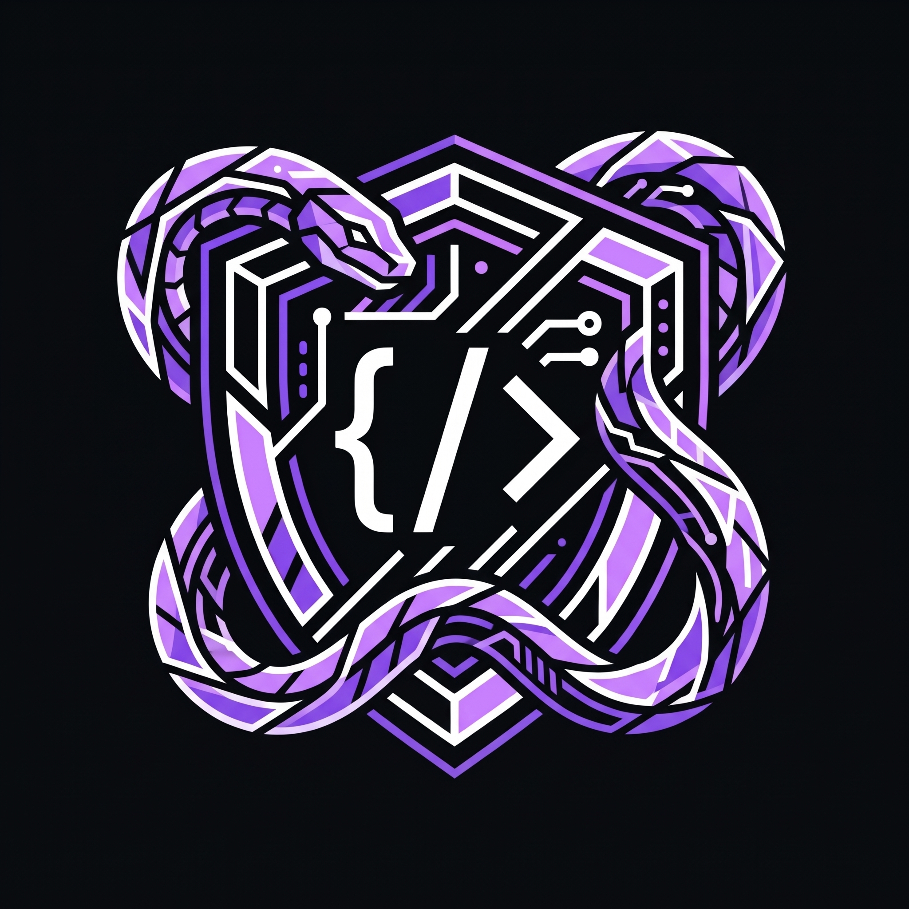

HTML5 e CSS3
Competências em design e produtividade garantem a entrega visual e documental completa de projetos digitais.
Portfólio estático focado em desenvolvimento web e boas práticas de segurança. Meus repositórios e perfil profissional estão a um clique de distância.

Sou estudante de Sistemas de Informação na Universidade de Uberaba (Uniube) e estudante de cybersecurity , construindo uma base sólida em desenvolvimento de software e segurança da informação.
Esta página funciona como uma vitrine estática hospedada no GitHub Pages, reunindo minhas competências técnicas e links diretos para repositórios e redes profissionais.
Competências em design e produtividade garantem a entrega visual e documental completa de projetos digitais.
Experiência com análise de dados converte métricas de campanhas em decisões orientadas por resultados.
Explorando as possibilidades da inteligência artificial em automação e análise de dados.
Estrutura base pronta para receber os dados, imagens e links reais de cada projeto do seu GitHub.
Solving 40 exercises in VisualG / Resolvendo 40 exercícios no VisualG.
Abrir no GitHub →Para conexões profissionais ou análise de código, utilize os links oficiais abaixo.